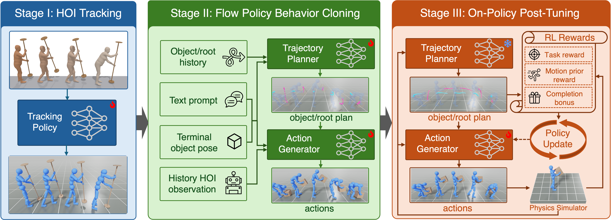

“Kick the smalltable, and set it back down.”
LYRICLanguage-Driven Physics-Based Character Control
for Contact-Rich Whole-Body Object Interaction
Explore the project 1Northeastern University2Sony Corporate Technology Center America Inc3Sony Interactive Entertainment Inc4Sony Corporation of America5Sony Group Corporation
TL;DR LYRIC turns a free-form language instruction and a sparse terminal object goal into contact-rich, physics-based whole-body interactions.
Abstract
We present LYRIC, a generative flow-matching controller for Language-driven phYsics-based contact-Rich Interaction Control, that enables simulated characters to perform contact-rich whole-body object interactions from a free-form language instruction and a sparse terminal object goal. To obtain reliable expert trajectories from imperfect motion-capture references, a single tracking policy is trained using geometry-conditioned interaction rewards and relaxed reference tracking near hand–object contact.
To guide interaction progress without prescribing a full-body kinematic reference, we factorize the controller into a task-level planner that predicts short-horizon object and humanoid-root trajectories, and an action generator that resolves whole-body motion and contacts in closed loop. After behavior cloning, we freeze the planner and post-tune the action generator on policy using the planner's predictions as stable supervision for intermediate task progression.
In a controlled OMOMO evaluation, our tracker achieves 64.3% success compared with 53.2% for an InterMimic reimplementation, while a unified policy achieves 76.5% on the full OMOMO dataset. On the held-out split, LYRIC achieves 90.3% task success, compared with 74.2% for the strongest matched kinematic-planner baseline, with better semantic alignment and motion quality. Without retraining, the controller also supports test-time object-waypoint guidance. Qualitative results further demonstrate robust, natural contact-rich interactions and zero-shot transfer to novel object shapes.
Learning to plan and act
From imperfect demonstrations to a language-driven controller, in three stages.

01 / HOI Tracking
Recover expert interactions
A single tracking policy learns from imperfect motion capture using geometry-conditioned interaction rewards and relaxed reference tracking near hand–object contact.
02 / Behavior Cloning
Plan motion. Generate actions.
A flow-matching controller predicts short-horizon object and humanoid-root trajectories, then generates actions that resolve whole-body motion and contacts in closed loop.
03 / On-Policy Post-Tuning
Refine through interaction
We freeze the planner and post-tune the action generator in simulation, using the predicted trajectories as stable supervision for intermediate task progress.
Language-Driven Whole-Body Interaction
From a language instruction and a terminal object goal, LYRIC produces whole-body interactions across a range of objects and tasks.
Small Table, page 1 of 2; showing videos 1 through 6 of 9.
“Lift the smalltable, move the smalltable and put down the smalltable.”
“Lift the smalltable, move the smalltable and put down the smalltable.”
“Lift the smalltable, so only two legs are off the floor. Slide your feet and rotate the smalltable as you slide. Lower the smalltable with your hands.”
“Lift the smalltable above your head, spin it and put the smalltable down.”
“Push the smalltable, and set it back down.”
Recovering Grasps from Imperfect Motion Capture
Geometry-conditioned interaction rewards and relaxed reference tracking near hand–object contact help a single tracking policy recover functional grasps from noisy demonstrations.
grasp recovery example 1 of 10: Clothes Stand
Clothes Stand
Noisy Mocap Data
The original motion-capture data contains noisy or physically inconsistent hand poses around the object.
Our Tracking Policy Rollout
Our unified tracking policy uses geometry-conditioned interaction rewards and relaxed reference tracking to recover a functional grasp.
Improving Contact through Post-Tuning
With the planner frozen, on-policy post-tuning helps the action generator maintain balance and object contact beyond the states covered by expert demonstrations.
comparison 1 of 9: “Pull the clothesstand, and set it back down.”
“Pull the clothesstand, and set it back down.”
Before Post-Tuning (Flow-BC)
The behavior-cloned policy does not complete this interaction during the rollout.
After Post-Tuning (Flow-BC + FT)
The post-tuned controller maintains better balance and more stable object contact.
Comparison with Kinematic-Planner Baselines
We compare with kinematic-planner baselines, which generate per-frame full-body and object motion and use a tracking policy to execute it in simulation.
baseline comparison 1 of 12: “Pull the clothesstand, and set it back down.”
“Pull the clothesstand, and set it back down.”
Ours: LYRIC
Our policy rollout for this instruction.
1-shot kin. planner + FT
A complete text-conditioned kinematic character–object motion sequence is generated once and executed by a closed-loop tracking policy. The generator is frozen and the tracker is further fine-tuned against its generated references using PPO.
Replan. kin. planner + FT
CLoSD-style closed-loop replanning generates a short kinematic horizon from recent simulated motion and executes a prefix with the tracker. The generator is frozen and the tracker is further fine-tuned against its generated references using PPO.
Object-Waypoint Guidance
Sparse object waypoints steer interactions at test time without retraining. Blue characters follow the waypoints; gray characters perform the same interaction without waypoint guidance.
Large Table
“Lift the largetable above your head, walk, and put the largetable down.”
Wood Chair
“Lift the woodchair over your head, walk and then place the woodchair on the floor.”
Suitcase
“Lift the suitcase, move the suitcase, and put down the suitcase.”
Large Box
“Lift the largebox, move the largebox, and put down the largebox.”
Small Box
“Lift the smallbox, move the smallbox, and put down the smallbox.”
Small Box
“Kick the smallbox, lift the smallbox, move the smallbox, and put down the smallbox.”
Zero-Shot Transfer to New Object Shapes
The same policy handles previously unseen shapes within familiar object categories, without retraining.
Zero-shot results, page 1 of 3; showing videos 1 through 6 of 17.
Large Table
“Lift the largetable above your head, walk, and put the largetable down.”
Large Table
“Lift the largetable above your head, walk, and put the largetable down.”
Wood Chair
“Lift the woodchair, move the woodchair, and put down the woodchair.”
Plastic Box
“Pull the plasticbox, and set it back down.”
Plastic Box
“Pull the plasticbox, and set it back down.”
Small Table
“Lift the smalltable above your head, walk, and put the smalltable down.”